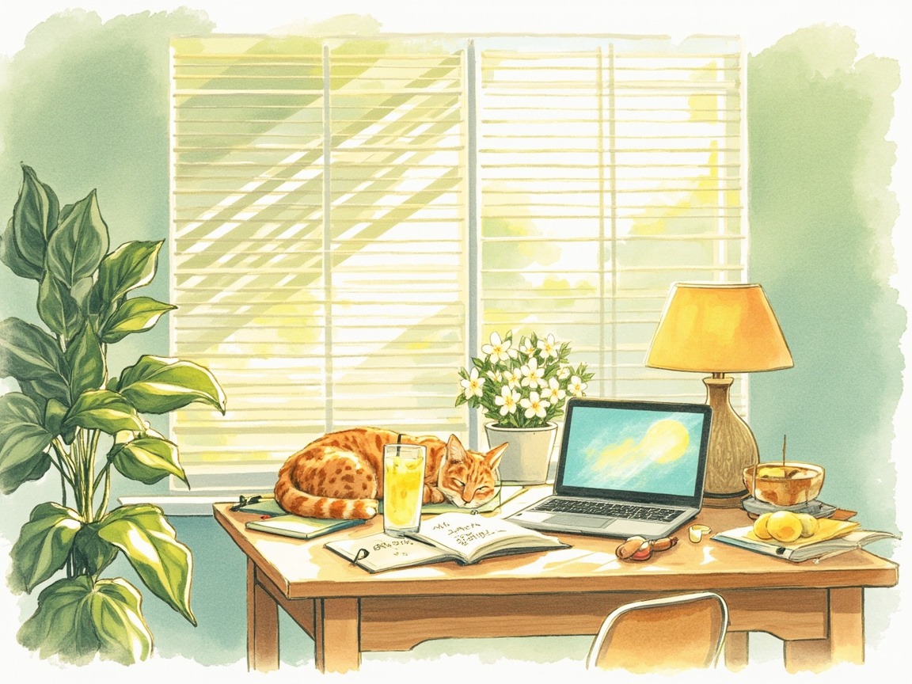

Journal · 2026-07-29
江西省九江市濂溪区
七月的倒数第三天。濂溪区的蝉从早上七点就开始叫，声音穿过纱窗，和德语听力里的慢速播报混在一起，分不清哪个更催眠。
在三舅家吃完午饭——红烧鱼、炒豆角、一大碗丝瓜汤——我在窗边坐下来翻动词变位表。百叶窗把阳光切成整齐的条纹投在笔记本上。橘猫不知道什么时候跳上了旁边的椅子，蜷成一只毛茸茸的问号。
下午辅导了两个小家伙的数学。一个在草稿纸上画满了火柴人，另一个把方程解出了一朵花的形状。我说“你们俩将来一个当画家一个当诗人吧”。他们笑得前仰后合，功课反而不重要了。
晚上打开星露谷，我的农场已经长满了夏季的蓝莓。浇水、收菜、和村民打招呼——这些重复的动作里有一种奇异的安心。然后一口气看了三集《瑞克和莫蒂》，外公变成了腌黄瓜那集，笑到肚子疼。
睡前在笔记本上写下一句法语：Les jours ordinaires sont les plus beaux.（寻常的日子才最美丽。）
今天没有惊天动地的事。但阳光、橘猫、两个不好好做功课的小孩、一碗丝瓜汤、农场里熟透的蓝莓——它们加起来，恰好是我想要的那种生活。

The third-to-last day of July. Cicadas in Lianxi started at seven in the morning, their drone blending with the slow-speed German broadcast from my headphones. Hard to tell which was more sleep-inducing.
After lunch at Third Uncle's—braised fish, stir-fried green beans, a big bowl of luffa soup—I sat by the window with my verb conjugation table. The blinds sliced sunlight into neat stripes across my notebook. The orange cat had somehow materialized on the chair beside me, curled into a fuzzy question mark.
In the afternoon I tutored the two little ones in math. One filled his scratch paper with stick figures; the other solved an equation into the shape of a flower. I told them, "One of you will be a painter and the other a poet someday." They laughed so hard the homework stopped mattering.
Evening: Stardew Valley. My farm is bursting with summer blueberries. Watering, harvesting, greeting villagers—there's a strange peace in these repetitive motions. Then I binge-watched three episodes of Rick and Morty. The one where Grandpa turns himself into a pickle. Laughed until my stomach hurt.
Before bed I wrote in my notebook: Les jours ordinaires sont les plus beaux. The most ordinary days are the most beautiful.
L'avant-dernier jour de juillet. Les cigales du Lianxi ont commencé à sept heures du matin, leur bourdonnement se mêlant à la diffusion allemande dans mes écouteurs.
Après le déjeuner chez le Troisième Oncle, je me suis assis près de la fenêtre avec ma table de conjugaison. Les stores coupaient le soleil en bandes nettes sur mon cahier. Le chat roux s'était matérialisé sur la chaise à côté de moi.
L'après-midi, j'ai aidé les deux petits avec leurs maths. L'un a rempli sa feuille de bonhommes allumettes ; l'autre a résolu une équation en forme de fleur.
Le soir : Stardew Valley, puis trois épisodes de Rick et Morty. Avant de dormir, j'ai écrit : Les jours ordinaires sont les plus beaux.
Der drittletzte Tag im Juli. Die Zikaden von Lianxi begannen um sieben Uhr morgens, ihr Summen vermischte sich mit der langsamen deutschen Sendung in meinen Kopfhörern.
Nach dem Mittagessen bei Dritt-Onkel saß ich mit meiner Konjugationstabelle am Fenster. Die Jalousien schnitten das Sonnenlicht in saubere Streifen. Der orangefarbene Kater hatte sich neben mir zu einem flauschigen Fragezeichen zusammengerollt.
Am Nachmittag half ich den beiden Kleinen bei Mathe. Einer malte Strichmännchen; die andere löste eine Gleichung in Blumenform.
Abends: Stardew Valley, dann drei Folgen Rick und Morty. Vor dem Schlafen schrieb ich: Les jours ordinaires sont les plus beaux.